AI Software Engineer · LLM Agents · RAG Pipelines · Cloud Architecture
📍 Cairo, Egypt | Open to Remote Work
Technical Expertise
Full-stack AI engineering from model integration to cloud infrastructure
Building intelligent agent systems, RAG pipelines, and prompt engineering at scale
Serverless architectures that cut costs by 28% while boosting reliability
Microservices and REST/GraphQL APIs powering production AI workflows
ETL pipelines, data quality from 78% → 97%, and executive dashboards
Container orchestration and automated deployment pipelines
Predictive models improving retention by 18%, NLP at 89% accuracy
Career Path
13 years across ML, data engineering, and AI systems
Featured Work
AI systems built and shipped in production environments
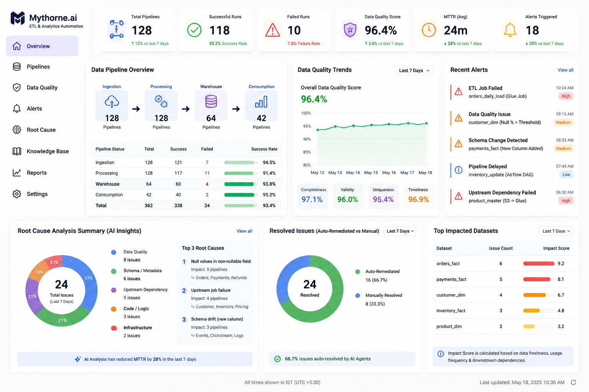
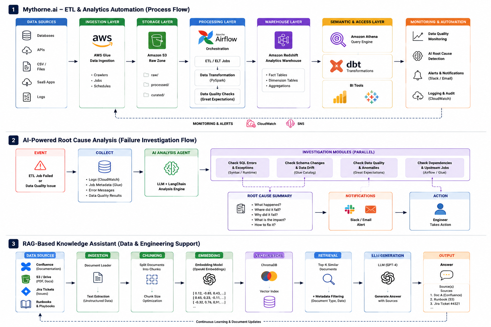
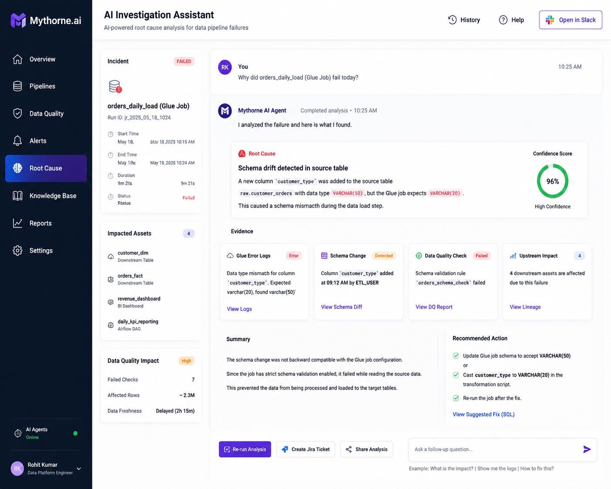
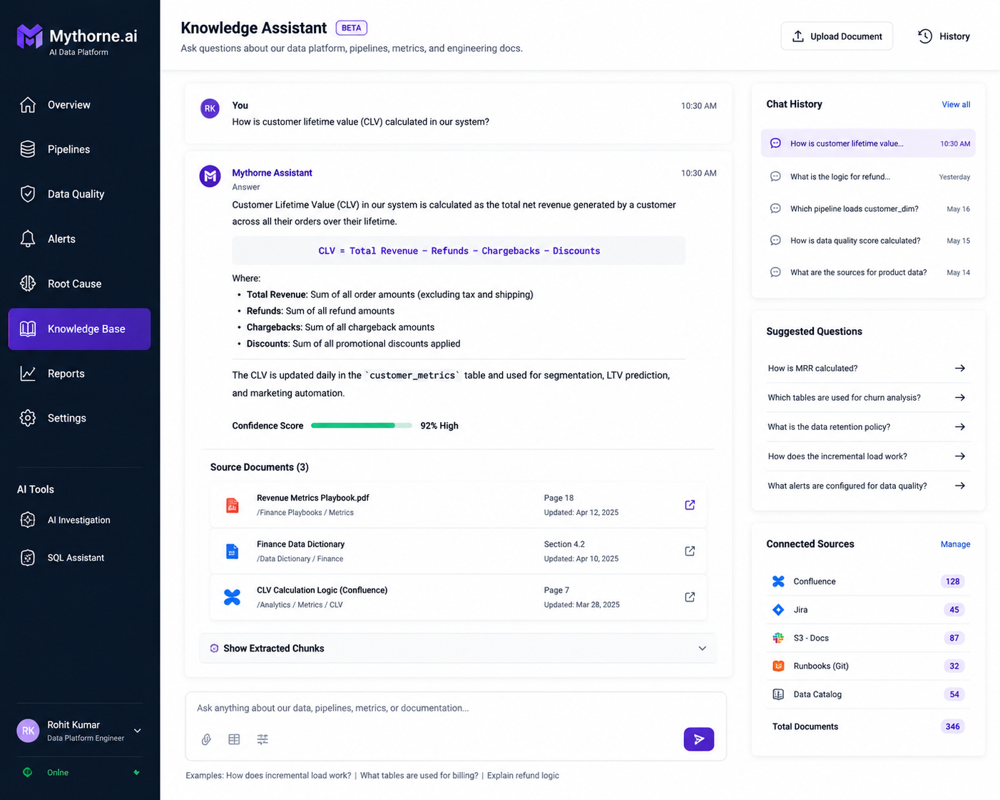
Designed an AI agent platform automating ETL validation, Tableau report checks, and job monitoring across AWS. Integrated MCP-based connectors for schema context, metadata, and lineage awareness. Implemented intelligent failure diagnosis that surfaced root causes in seconds.
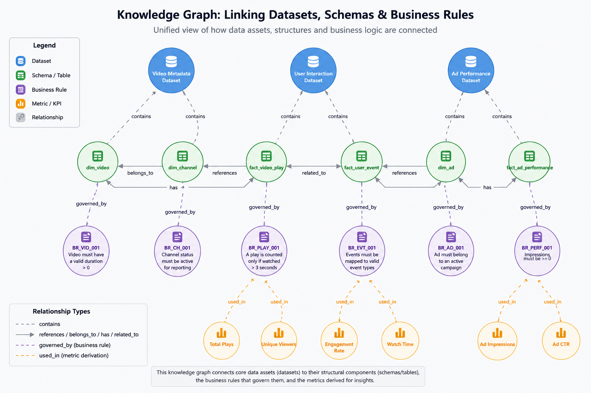
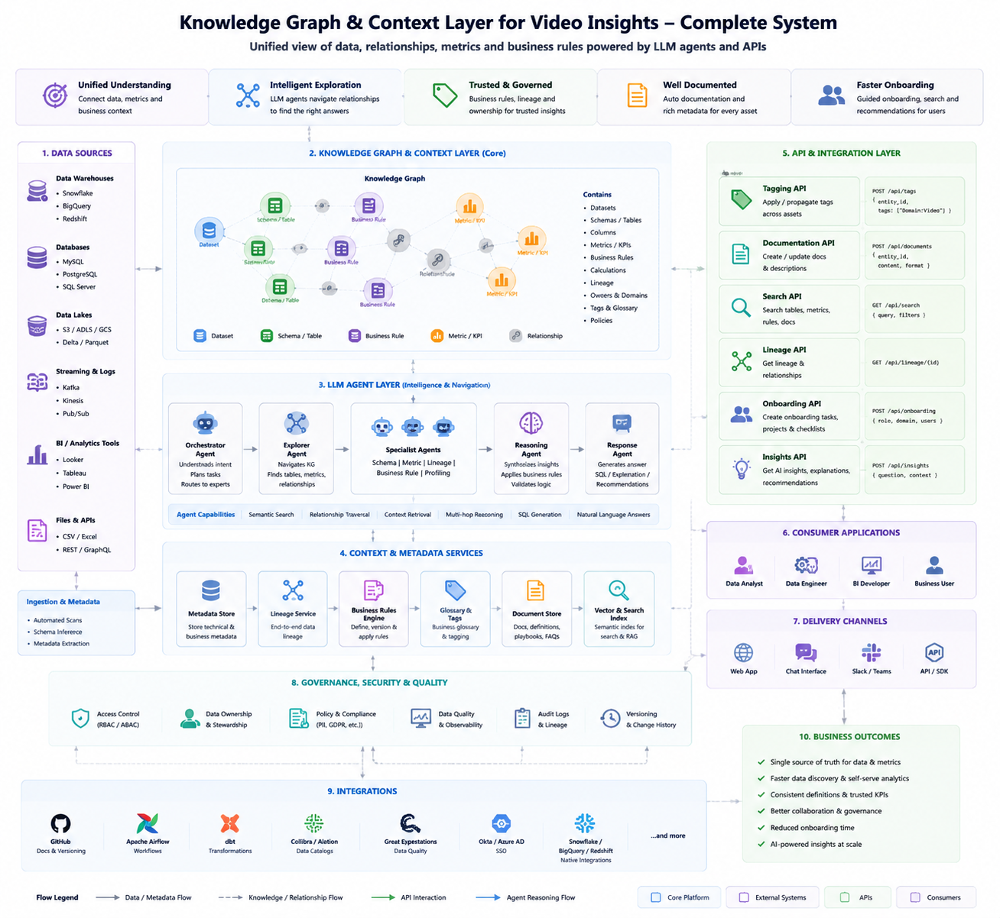
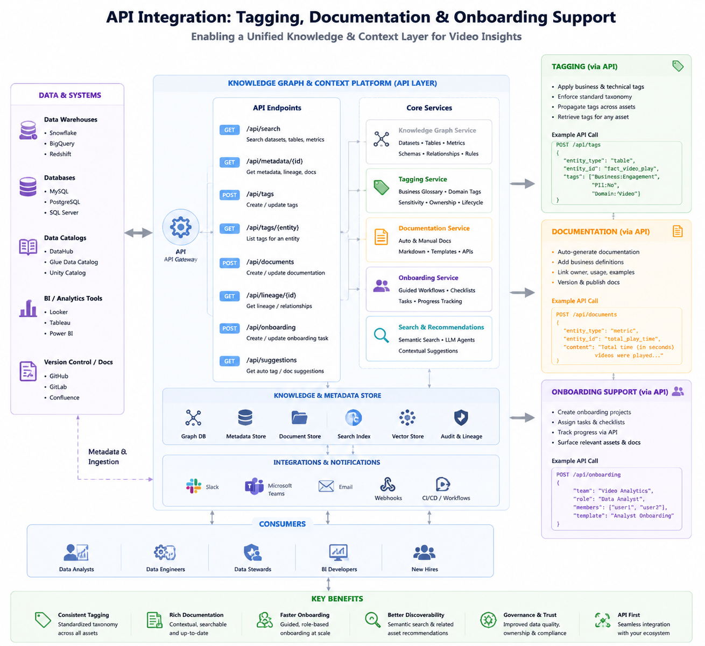
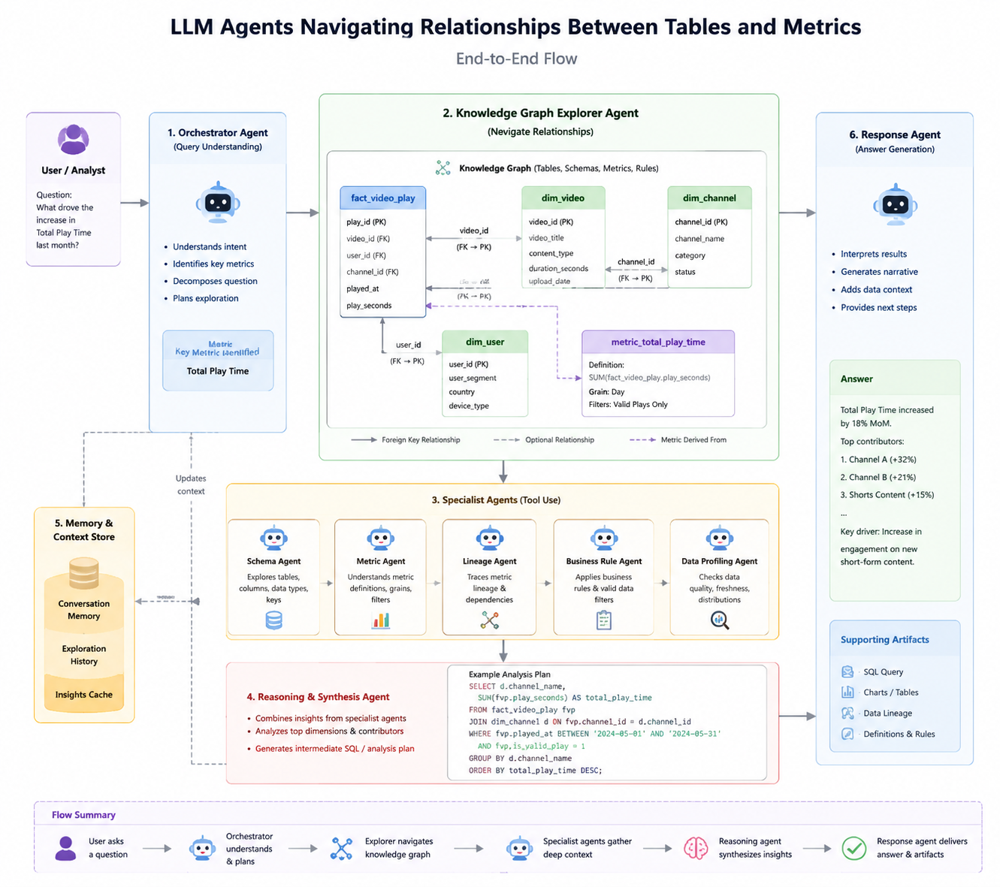
Built a semantic knowledge graph linking datasets, schemas, and business rules to enable LLM agents to reason over complex relationships in video analytics workflows. The graph empowered agents to navigate metrics and transformations with precision.
Computer Vision
Bounding boxes, polygon segmentation, multi-class labeling · COCO, Pascal VOC, custom JSON formats
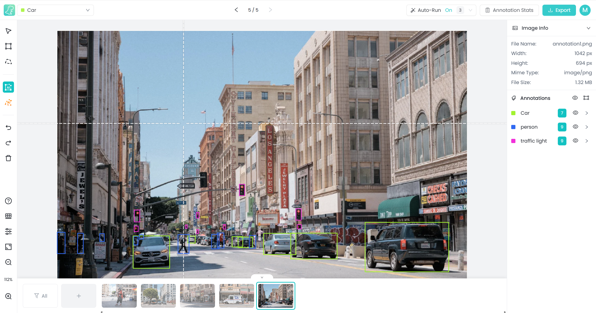
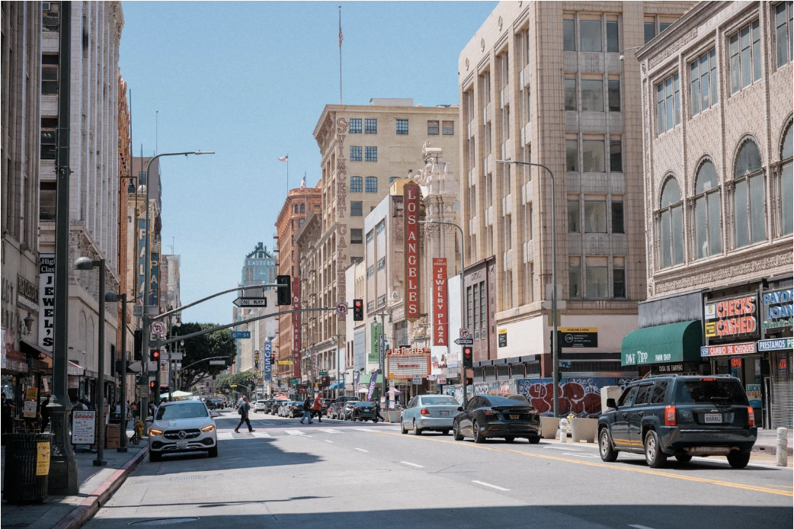
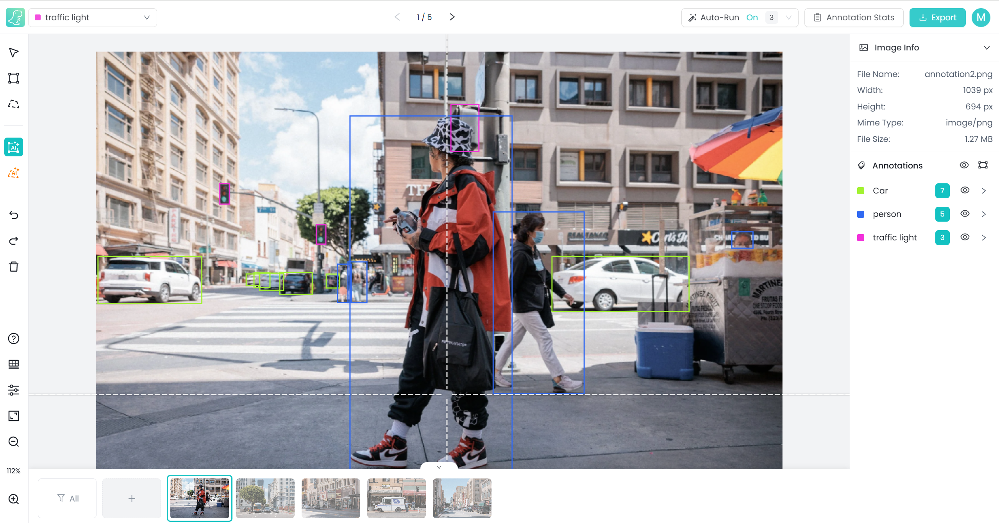
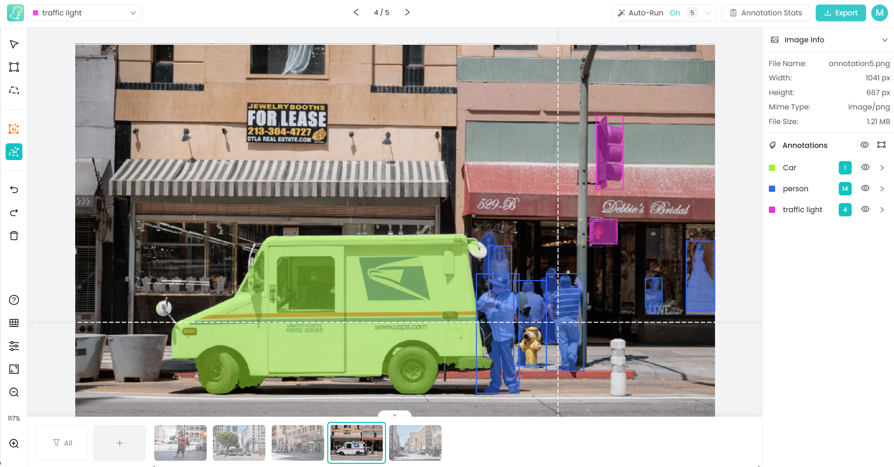
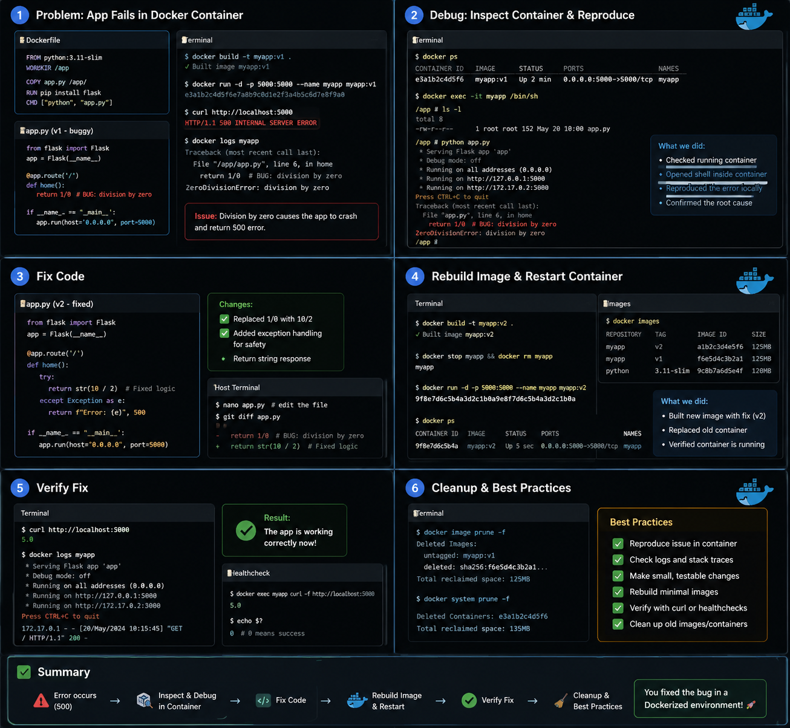
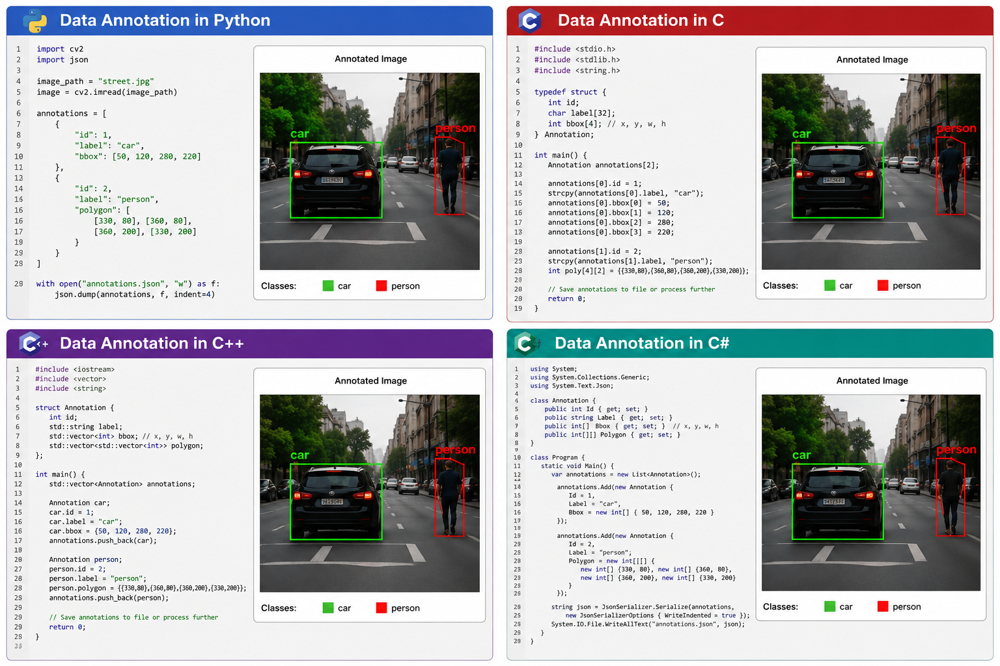
Open to senior AI/data engineering roles · Remote worldwide